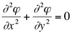
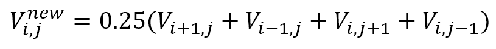
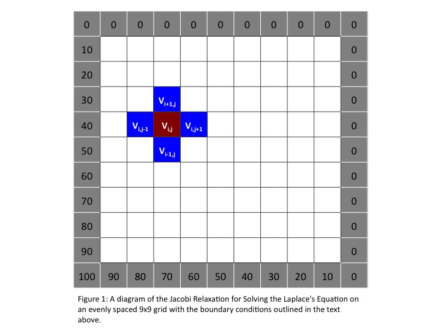

Background
The algorithm used in this program solves Laplace’s equation on an
evenly spaced grid through the use of a simple Jacobi iteration
technique. The equation is a partial differential equation
named after Pierre-Simon Laplace and are important in many fields of
science: namely the fields of electromagnetism, astronomy and fluid
dynamics. The physical interpretation of the equations is they
describe the behavior of potentials.
The equation has the form:

A practical solution to this equation is the use of a Jacobi iteration
that employs numerical second derivatives. Lets assume that we
would like to know the state of heat flow across a metal surface where
the source is coming from one of the corners of the square
surface.
To tackle this, we would set up a two dimensional grid to represent the
surface, and we will divide it evenly into square regions. We can
simulate the heat source by defining the boundary conditions along the
sides of the grid. In this case, we will be setting the bottom
left corner to 100.0 and with an increasing gradient toward the other
corners until it is zero. Once these conditions are set, the
algorithm will use numerical solutions to the second derivatives in
each direction to update the current matrix elements. And although we
won’t check for convergence, the flow of the surface will eventually
hit a steady-state.
The Algorithm
Following is a high-level description of the algorithm you will be
implementing. Figure 1 shows a diagram of the grid that will result
from the algorithm.
- Allocate and specify a 2D array defining an evenly spaced grid of
square dimension. You will need to leave space for the
boundaries, as they do not belong to the main grid (i.e. a 1024 x 1024
matrix would need to be allocated as 1026x1026 to leave room for the
borders.
- Setup the initial constant boundary conditions. The value
at the lower left hand corner of the of the grid will be fixed at
100.00, and the value ascending and to the right will be set to a
linear gradient reaching zero at the opposite corners (see Figure
1.). The rest of the borders will be fixed at zero. Please
note, these boundaries will remain constant throughout the simulation.
- Setup the initial condition of the inner grid elements as 0.5.
- Begin and continue for a fixed number of cycles the iterative
process. At each iteration, the value of each inner matrix
element needs to be recomputed from elements of the current
iteration. The updating formula, based on numerical computation
of second derivatives, is:

- After updating, copy the new matrix into the old's memory and
continue iterations until completion.
